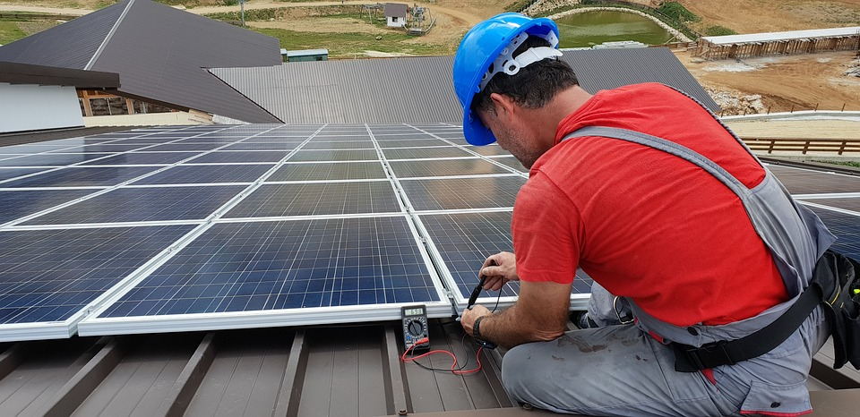

Overview
Purpose
[My website's goal is better to inform people about solar panels as an investment. I want the website to market and sell solar panels, and to explain the average return-to-cost ratio and the time it takes to break even.]
Audience
[I propose to help people who want to be investors in solar technology buy them, and be educated on them.]
Branding
Website Logo
Style Guide
Color Palette
Palette URL: https://coolors.co/0a122a-cec2ff-b15e6c-fdf0d5-7a918d| Primary | Secondary | Accent 1 | Accent 2 |
|---|---|---|---|
| [#0a122aff] | [#cec2ffff] | [#b15e6cff] | [#fdf0d5ff] |
Typography
Font: ['Lato', sans-serif]
Navigation
Site Map
Content
Home page
[Written copy for the home page here]
Images for the Home page

Images for the Page 2
Images for the Page 3
Home
[In recent years, the adoption of renewable energy sources has gained significant momentum due to the pressing need to combat climate change and reduce our dependence on fossil fuels. Among the most efficient renewable energy solutions are solar panels. We aim to provide an overview of how solar panels work, the steps to acquire them, and the compelling reasons why communities should consider incorporating solar panels into their lives. Solar panels, also known as photovoltaic (PV) panels, convert sunlight into usable electrical energy through a fascinating process known as the photovoltaic effect. Each solar panel consists of several solar cells, typically made of silicon, which is a semiconducting material. When sunlight reaches the solar panel, particles of light strike the silicon atoms, dislodging electrons from their atoms and creating an electric current. ]
[before you buy]
[steps to get them a. Assessment: Begin by evaluating your energy needs, budget, and the available space for solar panel installation. Consider factors such as orientation, shading, and local regulations. b. Research and Quotes: Conduct thorough research to identify reputable solar panel providers in your area. Obtain multiple quotes, comparing factors such as cost, quality, warranties, and customer reviews. c. Design and Financing: Work with a professional installer who will assess your site, design a customized solar system, and determine the financing options available. Options may include cash purchases, loans, power purchase agreements (PPAs), or leasing. A PPA is when a company installs solar panels on top of your home and gives you a split of profit/savings d. Permits and Installation: Secure the necessary permits and approvals from local authorities. Once all paperwork is complete, the installation process can begin. Skilled technicians will mount the solar panels on your roof or in your yard, ensuring optimal efficiency. e. Connection and Monitoring: After installation, the system must be connected to the electrical grid. This step often involves coordinating with your utility company. Monitoring software allows you to track your solar panel's performance and energy production. ]
[why should you]
[You should get solar panels for many reasons, most involving motivation in the form of investment. Solar panels are an investment that earns money by saving you money on your energy bills. As an investment, it makes use of your roof to help you make money. It is also proven that solar panels raise the value of your home by $15,000 on average. When you buy solar panels, you can qualify for the IRS Residential Clean Energy Credit. This saves you 30% of your installation cost in tax credits.]